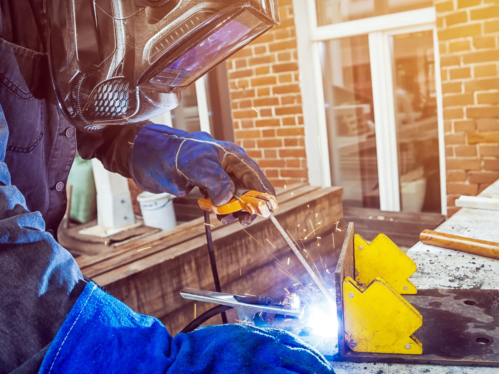

Home · Mobile Welding · Window Welding
New Orleans Window Welding Service
At Big Easy Mobile Welders, we repair rusted, cracked and worn metal window frames at homes and businesses across New Orleans. Our licensed, insured welders come to you with a fully equipped mobile unit and fix the damaged parts on site.

We come to the jobWhat Does Our Window Welding Service Cover for You in New Orleans?
Each window welding job in New Orleans starts with a free look at the frames and a no-obligation quote, then covers stripping rust and old coating down to sound metal, MIG or TIG welding matched to the frame, a licensed and insured welder at your property, and a walkthrough of every repaired window.
A Free Frame Inspection
We check each frame for rust, cracks and loose joints, then quote the repair with no hidden fees.
Prep Down to Sound Metal
Rust and blistered coating come off with brushes and grinders before any welding starts. Good prep is what lets the new weld bond to the frame.
MIG or TIG, Chosen for the Frame
Window frames are often thin, so we pick a controlled process such as MIG or TIG that joins the metal without burning through it.
Repairs at Your Property
Our welders bring the mobile unit to your home or business and repair the damaged parts on site wherever the frame allows.
Licensed and Insured Welders
Your frames go to a licensed, insured and highly trained welder, not a general handyman.
A Frame-by-Frame Walkthrough
We show you each repaired frame, explain what we fixed and stay a call away if something needs a touch-up.

What Window Welding Repairs Do Metal Frames Need in New Orleans?
Metal window frames in New Orleans usually need four kinds of welding work: rusted sections cut out and rebuilt, cracked or loose joints rewelded, blistered and worn frames restored after the coating fails, and design changes for owners who want a different look. Each starts with finding how far the damage goes.
Rusted Frame Sections
Rust is one of the most common signs of weather damage on metal frames. Where it has eaten through, the weak metal is cut away and new metal welded in.
Cracked or Loose Joints
Corners and joints take the stress when a window opens, closes and shifts with the building. A cracked weld is ground out and laid again so the frame stays square.
Blistered and Worn Frames
Blistering paint often hides rust spreading underneath it. We strip the frame back, repair any metal that has thinned, and leave it ready for a fresh coat.
Design Changes
Some owners want more than a repair. We can also rework a frame to a different design if you want a new look for the window.
Why Does Window Welding Matter for Metal Frames in Humid New Orleans?
Window welding matters in New Orleans because humid air, heavy rain and long wet seasons keep metal frames damp, and damp steel rusts. Harsh weather wears the paint away first, then rust spreads under the coating, blisters it and slowly thins the frame until joints crack or loosen.

A window frame rusts from the places water sits: the sill, the bottom corners and every joint.
Faded, chalky paint is the first warning, and blistering is the second. By the time rust streaks run down the wall, the metal under the blisters has usually started to thin.
Catching it early keeps the repair small. Our guide on how to protect welded metal from rust explains how to keep a repaired frame sealed.
Why Repair Metal Window Frames With Welding Instead of Replacing Them in New Orleans?
Repairing metal window frames with welding in New Orleans is often a cost-effective alternative to full replacement. A sound weld helps restore the frame's strength, keeps the window working the way it should, and lets you keep the original frame or even refresh its design instead of tearing it out.

Cost-Effective
Welding new metal into the damaged parts usually costs less than removing and replacing the whole window. You pay for the repair the frame actually needs.
A Frame That Stays Sound
A window has to stay structurally sound and keep water out. A properly welded joint helps hold the frame square so the window can close and seal properly.
A Better Look
Repaired and refinished frames can turn a tired window into a stylish accent. If you want a change, the design can be reworked at the same time.
How Do We Repair Metal Frames During Window Welding in New Orleans?
During a window welding visit in New Orleans, our welders repair the damaged frames at your property, after you request a free quote and we book a convenient time. We finish by walking you through each window, with easy payment options and follow-up support afterward.
Describe the Windows
Send the details through our online estimate form or by phone: how many windows need work and what you see.
Book a Visit
We book a time that suits you as soon as the quote is approved.
Frames Repaired on Site
Our welders arrive with the tools, prep each frame and weld the damaged parts.
Final Walkthrough
We walk you through every repaired frame, offer easy payment options and remain available for follow-up support.
 The rig comes to you
The rig comes to you
What Does Window Welding Cost in New Orleans?
Window welding in New Orleans is priced by how much of the frame is damaged, the type of metal, the number of windows and how easy they are to reach, along with the level of finish you want. Every quote follows a free inspection of the frames, with no hidden fees.
Extent of the Damage
A cracked corner is a small fix, while a sill rusted through needs new metal cut and fitted.
Type of Metal
The frame material decides the welding process and the filler, which affects time and cost.
Number of Windows and Access
Several frames on one visit, or windows on an upper floor, change the time and setup involved.
Level of Finish
A plain structural repair costs less than one finished and detailed to match a decorative frame.
What Should Owners Know Before Window Welding Begins in New Orleans?
Before window welding begins in New Orleans, check the frames for cracks, loose joints and rust, count how many windows need work, and plan access inside and out. Knowing the extent of the damage and how we reach each frame helps us plan the repair and quote it accurately.
Check the Frames
Look for cracks, loose joints, rust streaks and blistered paint, and note which windows show them. Regular checks like this also catch damage while it is still small.
Send Photos
Close-up photos of the worst corners and a wider shot of each window help us plan the repair and price it accurately.
Clear the Way
Move curtains, furniture and anything flammable away from the window, and let us know about gates and pets. Our guide on preparing your property for the mobile welder has a full checklist.
What Reviews Has Our Window Welding Team Earned in New Orleans?
Our mobile welders earn reviews for fast turnarounds and fair prices, and for workmanship customers call top-notch. That licensed, insured New Orleans team is the same one that repairs rusted, cracked and worn metal window frames on site at homes and businesses, one frame at a time.
Big Easy Mobile Welders provide quality welding work at a reasonable price. They have been reliable and quick to respond whenever I've needed them, which has made it easy for me as their customer!
The guys from Big Easy Mobile Welders were great! They came to my house and welded two iron railings with a quick turnaround time, which was just what I needed. The quality of workmanship is top notch which made me a satisfied customer! If you need anything welded then these guys will be able to help out big time.
I can't recommend Big Easy Mobile Welders enough! They helped me out of a jam by welding our gate, and their work is amazing. The fast service combined with great quality made all the difference in getting things done quickly without any hassle for me. Thanks again, guys!
If you need a welder for any type of job, I highly recommend Big Easy Mobile Welders. The team did an amazing job on my home and business! They were professional from start to finish. Thankful that their work could help me get back up and running again sooner than expected.
I had the pleasure of working with Big Easy Mobile Welders this past week. They are not only professional and skilled, but also very affordable! I highly recommend them for any welding job you may need done on your property or vehicle. You won't regret using these guys as they do amazing work at a fair price 10/10 would do again!
What Else Can Our Welders Fix During Window Welding in New Orleans?
Alongside window welding in New Orleans, our welders take on iron railing repairs, gate and fence welding, pipe welding, specialized repairs at your home or office, and custom welding. Each one is handled on site by our licensed, insured team, so several repairs can often share one visit.

Iron Railing Welding
Custom indoor and outdoor railings for stairways, decks and balconies, built to fit your property.
View railing welding →
Gate Welding
Gate repairs and custom gates in steel or aluminum, with materials and tools covered in your estimate.
View gate welding →
Fence Welding
Fence repairs and custom fence fabrication, with the material and process chosen for your fence.
View fence welding →
Pipe Welding
Pipe and pipeline repair on site, with stick and gas-shielded processes matched to the pipe.
View pipe welding →
Specialized Mobile Welding
Repair work at your home or office and custom metal pieces, whatever the size of the project.
View specialized welding →
Custom Welding
Custom ironwork, estimated before we start so we arrive with the right equipment for the job.
View custom welding →
How Can Owners Get a Free Window Welding Quote in New Orleans?
Homeowners and businesses can request a free window welding quote in New Orleans with our online estimate form or a call to (504) 370-2757. Tell us how many frames need work, what the damage looks like and where the windows are, and we will reply with a no-obligation quote and transparent pricing.
Loading the estimate form...
If it does not appear, call us at (504) 370-2757.

What Questions Do Owners Ask About Window Welding in New Orleans?
Owners of metal windows in New Orleans most often ask what steel windows are, how to restore them, whether rusty metal can be welded, how to fix a broken metal frame, how to strip and paint one, how glass goes back in and how energy efficient steel windows are.
What are steel windows?
Steel windows have frames made from slim steel sections, often in casement or fixed styles with narrow sightlines. Many older homes and commercial buildings still have them. Steel is strong, so the frames can be thin, but bare steel rusts, which is why the paint or coating has to be kept up.
How do you restore steel windows?
Restoration usually starts with stripping old paint and rust from the frame. Thinned or rusted sections are cut out and rebuilt with welded steel, cracked joints are rewelded, and the hardware is freed up. The frame is then primed, painted and reglazed so it seals against weather again.
Can you weld rusty metal?
You can, but the weld will be weak and porous if it goes over rust. Welders grind or brush the joint back to clean, bright metal first. If rust has thinned the metal too far to hold a weld, that section is cut out and a new piece is welded in its place.
How do you fix a broken window in a metal frame?
Start by finding what broke. If the glass is cracked, a glazier usually replaces the pane. If the frame itself has cracked or rusted through, the damaged metal is cleaned, cut out where needed and rewelded, and then the frame is painted before the glass is set back in.
How do you remove paint from a metal window frame?
Old paint comes off a metal frame with a chemical stripper, a heat gun or a wire wheel and sanding. Protect the glass and the area around the window while you work. In older buildings the paint may contain lead, so test it first and follow safe removal practices.
How do you paint a metal window frame?
Clean the frame and sand away loose paint and rust until the surface is sound. Wipe it down, apply a rust-inhibiting metal primer, then finish with two thin coats of exterior paint made for metal. Tape the glass edges, and paint on a dry day so moisture is not trapped underneath.
How do you replace window glass in a metal frame?
The old glazing compound or gasket is removed, the broken pane is taken out and the rebate is cleaned. Any rust or frame damage should be repaired at this point. A new pane is then bedded in, held with clips or glazing points, and sealed with fresh compound or a new gasket.
Are steel windows energy efficient?
Older steel windows are generally not very energy efficient, mostly because of single glazing and air leaking around the sash. Caulking, weatherstripping, storm windows or insulated glass can improve them a great deal. Keeping an older frame sound and well sealed, with no gaps or rusted joints, also helps cut drafts.


Book Your Free Mobile Welding Estimate
Tell us what needs welding, and we will bring the rig to your door anywhere in the New Orleans area.